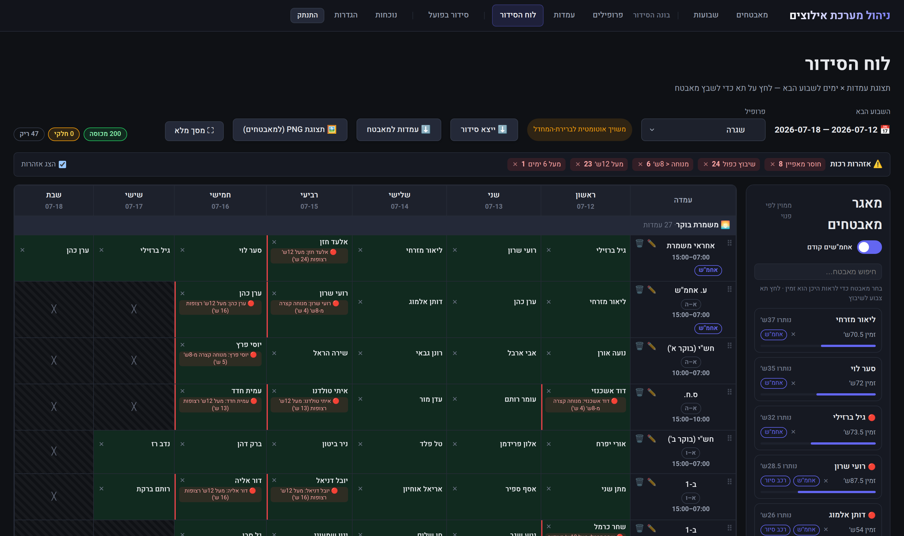
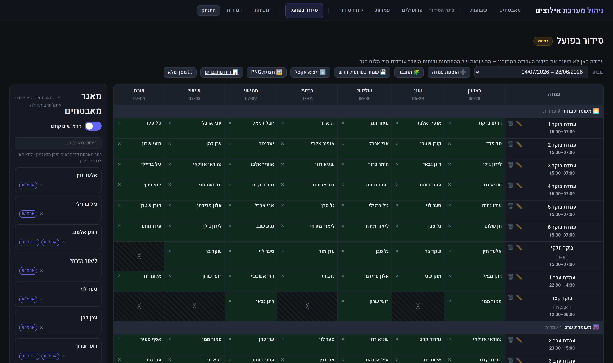
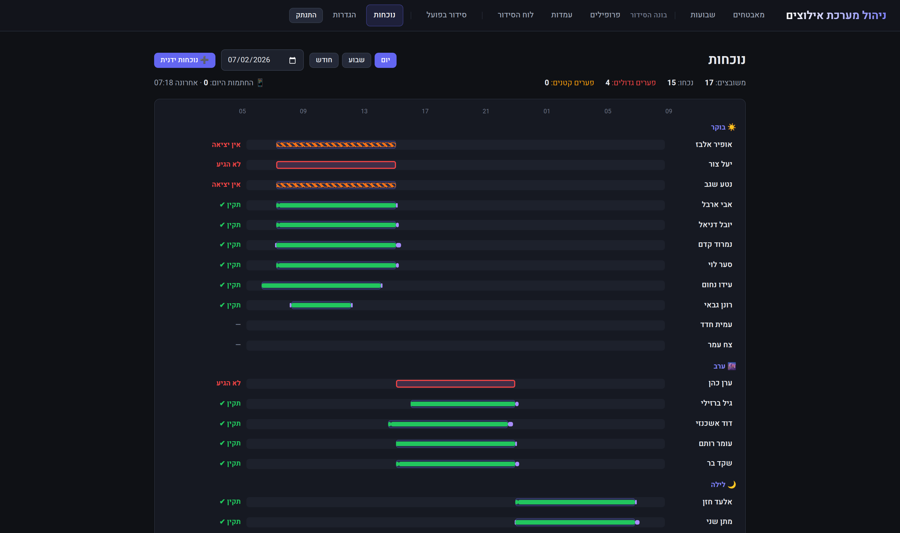
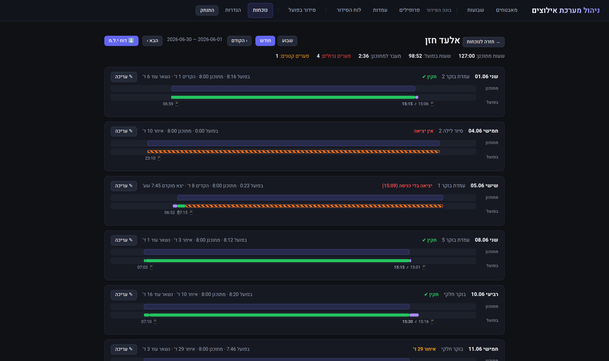
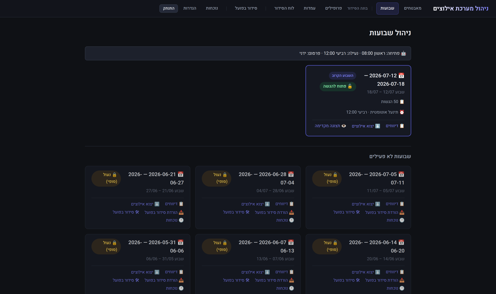
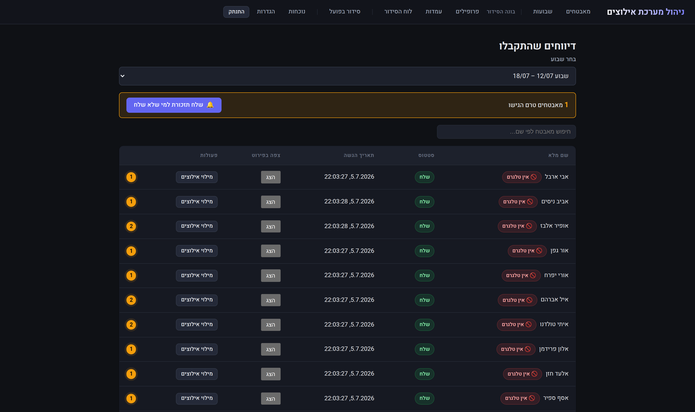
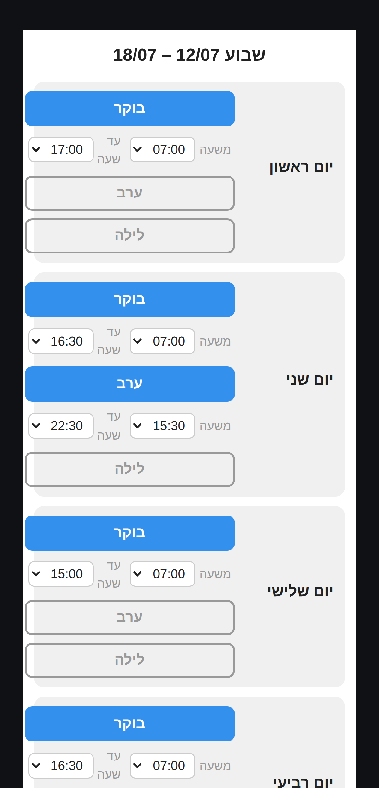

End-to-end workforce scheduling, availability & attendance for security teams — from the moment a guard submits weekly availability in Telegram, to the payroll report on the accountant's desk. One pipeline, one source of truth, zero manual re-keying.
Every stage feeds directly on the output of the previous one — the same data flows end to end, with no copy-paste and no parallel spreadsheets.
Guards report weekly availability in a Telegram Web App — no extra app, no passwords.
A styled, color-coded RTL Excel export of every submission — round-trip importable.
Availability paints the board; smart manual assignment with live soft warnings.
Each guard gets a personal message + a PNG of the full schedule; locking is automatic.
An editable copy of the plan for the running week — last-minute swaps, forever.
Telegram punch clock, cross-checked minute-by-minute against the actual schedule.
Payroll-bureau-ready Excel reports: standard vs. actual hours, fully transparent.
Real screens from the running system (demo data). Dark-indigo admin dashboard, RTL Hebrew, fully responsive.







A layered FastAPI backend with separated domain packages, a single React app for both admin and guards, and a Telegram bot for notifications and punches.
aiogram · notifications, punch clock, submissions
admin dashboard + guard submission form
Controllers → Services → Repositories → Models
separate domain packages, one-way dependency boundary
20+ managed migrations · critical rules also enforced by DB-level unique indexes
Business logic lives in services and is testable in isolation; controllers stay thin, repositories own the SQL.
Every major capability (attendance, actual schedule, builder) ships dark behind a flag. Flag off = previous behavior, bit for bit.
Excel export, Telegram publish, PNG render and the comparison engine all consume the same read-model — they cannot drift apart.
pytest on the backend, Vitest on the frontend, golden-fixture parity tests keeping the JS and Python warning engines identical.
APScheduler cron jobs with startup catch-up — a server that was down at midnight heals itself on boot.
Deliberately simple: no reopening, at most one open week, and one irreversible final state. Enforced twice — in service logic and in the database itself.
Future week,
waiting to be opened
Submission window —
guards report availability
Board building + publish
(broadcast keeps the status)
The week started —
final and irreversible
It sends every guard a personal schedule + a PNG of the full board and stamps published_at — but never locks. Edit → republish, in a loop, until the week begins.
LOCKED happens exactly when the start date arrives — automatically and silently, on Saturday night. It locks both the board and the constraints, for everyone.
Opening is allowed only for the upcoming, never-yet-opened week. Enforced by service logic and a partial unique index in PostgreSQL — a race cannot break it.
Opening and locking are scheduled from the settings page; a startup catch-up covers any missed midnight. Retention keeps the last 60 weeks, automatically.
"The system surfaces, the human decides" — soft warnings everywhere, hard blocks almost nowhere.
Deployed on Railway with auto-migrations on every deploy; secrets validated fail-fast at boot; login brute-force throttling; Excel formula-injection neutralized; import size caps against zip bombs.
The data model was designed for these from day one.
Availability, attributes and each guard's "preferred shift" are already collected as inputs for a suggestion engine.
One-off position tweaks in the builder without touching the profile.
A wall-mounted punch source, joining Telegram through the same append-only event log.
Closing the loop with the payroll bureau on the definitive export format.